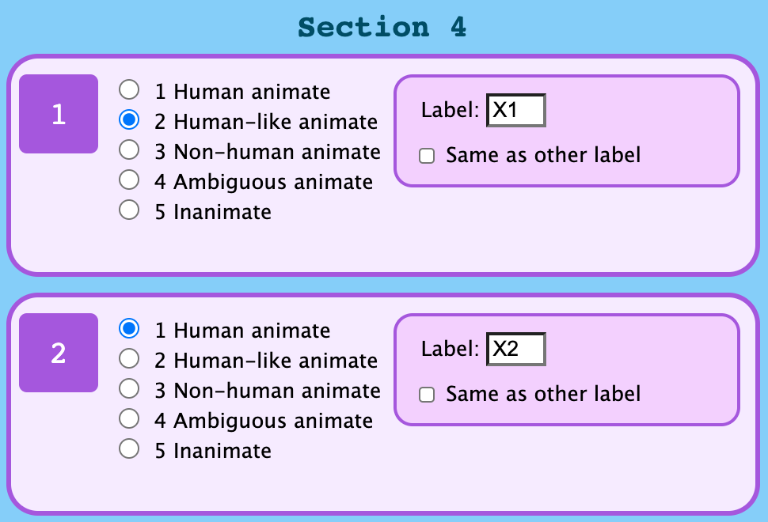
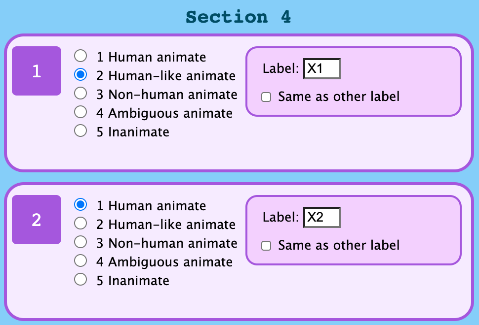

Hopefully you are comfortable with the tool and ready to go to the main task!
The animacy choices and labels on the previous example should look something like the images below.
 

If you have any questions, please message the lead researcher (L.Edlin@qmul.ac.uk).
The example sheet can be downloded again here if needed.